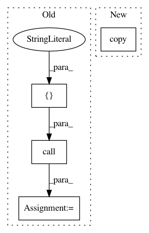

74310f451bd204e682b27c9b296d71a22c941cd3,mltsp/run_in_docker_container.py,,featurize_in_docker_container,#Any#Any#Any#Any#Any#Any#Any#,23
Before Change
copied_headerfile_path = os.path.join(
copied_data_dir, headerfile_path.split("/")[-1])
tmp_files.append(copied_headerfile_path)
status_code = call(["cp", headerfile_path, copied_headerfile_path])
arguments["headerfile_path"] = os.path.join(
"/home/mltsp/copied_data_files", headerfile_path.split("/")[-1])
if os.path.isfile(str(zipfile_path)):
copied_zipfile_path = os.path.join(copied_data_dir,
After Change
cfg.MLTSP_PACKAGE_PATH, "custom_feature_scripts"),
"custom_feature_defs.py")
tmp_files.append(copied_custom_script_path)
shutil.copy(custom_script_path, copied_custom_script_path)
arguments["custom_script_path"] = ("/home/mltsp/mltsp/"
"custom_feature_scripts/"
"custom_feature_defs.py")
In pattern: SUPERPATTERN
Frequency: 3
Non-data size: 4
Instances
Project Name: cesium-ml/cesium
Commit Name: 74310f451bd204e682b27c9b296d71a22c941cd3
Time: 2015-02-09
Author: a.crellinquick@gmail.com
File Name: mltsp/run_in_docker_container.py
Class Name:
Method Name: featurize_in_docker_container
Project Name: cesium-ml/cesium
Commit Name: 74310f451bd204e682b27c9b296d71a22c941cd3
Time: 2015-02-09
Author: a.crellinquick@gmail.com
File Name: mltsp/run_in_docker_container.py
Class Name:
Method Name: predict_in_docker_container
Project Name: cesium-ml/cesium
Commit Name: 74310f451bd204e682b27c9b296d71a22c941cd3
Time: 2015-02-09
Author: a.crellinquick@gmail.com
File Name: mltsp/custom_feature_tools.py
Class Name:
Method Name: copy_data_to_tmp_dir